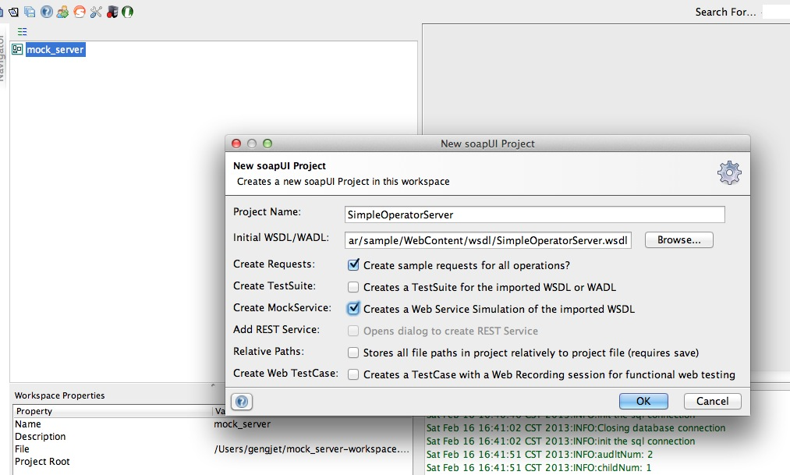
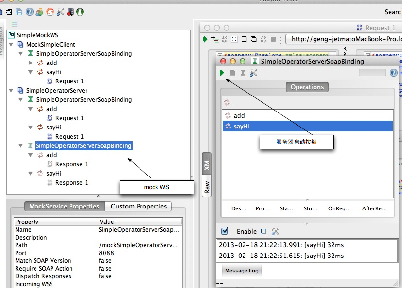
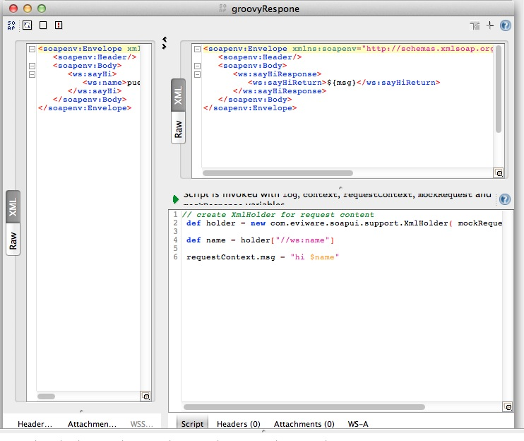

用SoapUI mock Web服务
最近工作大量使用三方的Web Service（以下简称WS）。三方的WS时好时坏。让人很是郁闷，所以就动了自己按照三方提供的wsdl自己实现同样接口的WS。其实这就是Mock。 简单google了一下发现 SoapUI 已经具有这样的功能，而且很容易上手。毫不犹豫的用起来。
创建动态的WS mock
我们的目标是根据一个wsdl文件创建一个WS mock。WS client可以方法这个WS mock，并且能产生动态的相应。 在开始前我们需要如下材料：
- JDK， 建议使用1.5向上版本。
- SoapUI 4.5.1版本
- 一个wsdl文件。我使用的wsdl文件在
好了，准备好上述的内容我们就开始创建WS mock。 首先打开SoapUI。 通过File菜单中的new project新建一个项目。
Note
在创建界面要勾选”Create MockService”选项。
在SoapUI的导航面板中，我们就会看到如下图所示的结构
- mock WS中显示了Mock WS的所有响应。当然你可以通过右键菜单对他做各种操作。
- 通过右键菜单中的”Show MockService Editor”可以打开”服务器启动按钮”所在的”MockService Editor”。
- 点击”服务器启动按钮”时就会启动一个jetty（jetty-6.1.26）服务器，并将部署一个包括当前mock的服务到jetty中。这时通过浏览器访问 http://localhost:8088 就会看到如下效果。
这时mock WS已经开始服务了。但是现在的mock还是静态的。SoapUI为了让用户创建动态的响应提供了Groovy脚本支持。 下面就来创建动态的响应。
通过Groovy脚本创建动态响应
通过点击sayHi，下面的Response 1项的右键菜单中的”Show MockResponse Editor”打开”MockResponse Editor” 准备编辑该响应。 具体内容如下图所示：
下面分析图中的代码：
1 2 3 4 5 6 | // create XmlHolder for request content
def holder = new com.eviware.soapui.support.XmlHolder( mockRequest.requestContent )
def name = holder["//ws:name"]
requestContext.msg = "hi $name"
|
- 第2行，将Soap 请求封装成一个XmlHolder。提供各种好用的东西，让你想取请求中的那个部分，就取那个部分。
- 第3行，取出”//ws:name”。 也就是客户端传来的name参数。
- 第6行，拼出一个动态的变量。存放到requestContext中。备用！
- 最后在响应中以${msg}的方式引用存入requestContex中的msg变量。
由于这个Scrip 是用Groovy写的，你可以使用任何语句。完成你的逻辑。你甚至可以通过jdbc连接数据库。查询数据。 要完成jdbc连接数据库要解决如下问题：
- 如何为SoapUI中的Groovy脚本添加三方jar？
- 如何让多个响应公用一个数据库连接池？
- 随后为了能够脱离SoapUI进行测试，如何把我们创建好的Mock WS部署到类似于Tomcat， Jetty这样的服务器中去？
欲见详情，请听下回分解！
在OSGi中部署Web应用(一)
概述
在很久很久以前，我们用 ‘HTTP Registry’_ 在OSGi环境中注册Servlet，JSP以及静态资源。或者通过 HTTP ServletBridge 在Web容器中启动一个OSGi的方式来实现Web应用和OSGi的集合。在很多文章 [1] 中都有描述。 但是这样的方式让传统的Web程序员望而生畏他们熟悉的web.xml文件，WEB-INF文件夹在 ‘HTTP Registry’_ 方式中都不见了， 更要命的是对Filter都没有的支持还不全。 为了实现模块化他们甚至要重现学习OSGi的相关内容。所以他们停住了脚本。 不过现在好了，有了 org.eclipse.jetty.osgi.boot 这一切都发生了改变。
- 本文假定读者对如下知识有所了解：
- Java基础知识。
- Java中的Classloader机制。
- OSGi Plugin 开发的基本步骤。
什么是org.eclipse.jetty.osgi.boot
org.eclipse.jetty.osgi.boot是Jetty项目的一部分。本质而言他就是Jetty中的Start.jar在OSGi中的替代品。他会根据${jetty.home} 这个系统参数找到jetty.xml这个文件。并根据该文件的配置的在OSGi中启动一个真实的Jetty Server。 新启动的这个Jetty Server的classloader 会包括org.eclipse.jetty.osgi.boot 这个bundle的所能看到的所有类和其他资源，${jetty.home}/lib/ext 和${jetty.home}/resources中的所有类及其他资源。
部署传统的Web 应用
既然上面已经提到了org.eclipse.jetty.osgi.boot 启动的是一个标准的Jetty Server。 所以我们在部署的传统的Web 应用的时候，主需像在传统的Jetty Server中部署Web一样就可以了。 下面我们就一步一步做一遍。 在开始之前我们要确认一下所需要的库：
- JDK 1.5 向上。
- OSGi Framework， 推荐Equniox 下载地址为： http://download.eclipse.org/equinox/
- Jetty Bundles发行包 下载地址为： http://download.eclipse.org/jetty/updates/jetty-bundles-8.x/8.1.5.v20120716/
- 带有PDE 的Eclipse。 下载地址为： http://www.eclipse.org/downloads/
准备Target Platform
将OSGi Framework 和Jetty Bundles解压到同一个文件夹。假定该目录为${Target_Path}。打开Eclipse，通过菜单Windows –> Preferences –> target 打开Target Platform的设定界面，也可以通过Ctrl+3 输入”Target Platform”来打开Target Platform设定界面。

新建一个Target Platform, 把${Target_Path} 加入到该Target Platform中。 并勾选新建的Target Platform为当前Platform。
新建Debug Configuration
Ctrl+3 输入”Debug Configuration”, 打开Debugy 配置界面。在”OSGi Framework”下新建一个启动配置。 选取如下插件：
com.springsource.javax.xml.stream_1.0.1
com.springsource.net.sf.cglib_2.1.3
com.springsource.org.aopalliance_1.0.0
com.springsource.org.apache.commons.codec_1.3.0
com.springsource.org.apache.commons.logging_1.1.1
com.springsource.org.apache.juli.extras_6.0.18
com.springsource.org.apache.log4j_1.2.15
com.springsource.org.apache.xmlbeans_2.4.0
com.springsource.org.objectweb.asm.commons_3.1.0
com.springsource.org.objectweb.asm.tree_3.1.0
com.springsource.org.objectweb.asm_3.1.0
javax.annotation_1.1.0.v201105051105
javax.el_2.2.0.v201108011116
javax.servlet.jsp.jstl_1.2.0.v201105211821
javax.servlet.jsp_2.2.0.v201112011158
javax.servlet_3.0.0.v201103241009
org.apache.commons.collections_3.2.0.v200803061811
org.apache.commons.lang_2.3.0.v200803061910
org.apache.commons.pool_1.5.6
org.apache.geronimo.specs.geronimo-activation_1.1_spec_1.0.2
org.apache.geronimo.specs.geronimo-j2ee-management_1.1_spec_1.0.1
org.apache.geronimo.specs.geronimo-javamail_1.4_spec_1.3.0
org.apache.jasper.glassfish_2.2.2.v201112011158
org.apache.taglibs.standard.glassfish_1.2.0.v201112081803
org.aspectj.runtime_1.6.4.20090304172355
org.aspectj.weaver_1.6.4.20090304172355
org.eclipse.core.contenttype_3.4.1.R35x_v20090826-0451
org.eclipse.core.jobs_3.4.100.v20090429-1800
org.eclipse.core.runtime_3.7.0.v20110110
org.eclipse.equinox.app_1.3.100.v20110321
org.eclipse.equinox.common_3.5.0.v20090520-1800
org.eclipse.equinox.http.servlet_1.0.200.v20090520-1800
org.eclipse.equinox.preferences_3.4.0.v20110502
org.eclipse.equinox.registry_3.4.100.v20090520-1800
org.eclipse.jetty.continuation_8.1.0.v20120127
org.eclipse.jetty.deploy_8.1.0.v20120127
org.eclipse.jetty.http_8.1.0.v20120127
org.eclipse.jetty.io_8.1.0.v20120127
org.eclipse.jetty.jmx_8.1.0.v20120127
org.eclipse.jetty.jndi_8.1.0.v20120127
org.eclipse.jetty.nested_8.1.0.v20120127
org.eclipse.jetty.osgi.boot_8.1.0.v20120127
org.eclipse.jetty.osgi.httpservice_8.1.0.v20120127
org.eclipse.jetty.security_8.1.0.v20120127
org.eclipse.jetty.server_8.1.0.v20120127
org.eclipse.jetty.servlet_8.1.0.v20120127
org.eclipse.jetty.util_8.1.0.v20120127
org.eclipse.jetty.webapp_8.1.0.v20120127
org.eclipse.jetty.xml_8.1.0.v20120127
org.eclipse.osgi.services_3.3.0.v20110513
org.eclipse.osgi_3.7.2.v20120110-1415
org.hamcrest.core_1.1.0.v20090501071000
在启动阐述中加入
-Djetty.home=${jetty.home}
在${jetty.home} 这个目录中包括如下结构：
.
├── contexts
├── etc
│ └── jetty.xml
├── lib
│ └── ext
├── resources
└── webapps
这个时候启动刚才新建的Debug 配置。这时去访问etc/jetty.xml 配置的端口（我本机设定是9080端口，所以我的访问地址是http://localhost:9080）。会的到如下效果。

各位看官可能会说：这不就是一个404错误页面吗，还是Jetty的。有什么好炫耀的啊！真的没有炫耀，只是用他来说明一个问题! 说明我们的org.eclipse.jetty.osgi.boot 启动了一个Jetty服务。因为这个服务中没有部署任何web应用所以给他给出了一个404错误。 我们下一步就是去部署一个传统的Web应用。 我这个应用很简单，只有一个静态页面。war的具体结构如下：
META-INF/MANIFEST.MF
build.properties
WEB-INF/web.xml
index.html
把这个war直接放到${jetty.home}/webapps目录下。我们可以从控制台看到如下信息：
2012-12-17 18:21:28.193:INFO:oejd.DeploymentManager:Deployable added: jetty-home/webapps/org.web.war
2012-12-17 18:21:28.280:INFO:oejw.WebInfConfiguration:Extract jar:file:jetty-home/webapps/org.web.war!/ to /private/var/folders/z3/38fg6pfx37z6tbfw6878tps80000gn/T/jetty-0.0.0.0-9080-org.web.war-_org.web-any-/webapp
2012-12-17 18:21:28.599:INFO:oejsh.ContextHandler:started o.e.j.w.WebAppContext{/org.web,file:/private/var/folders/z3/38fg6pfx37z6tbfw6878tps80000gn/T/jetty-0.0.0.0-9080-org.web.war-_org.web-any-/webapp/}, /temp/jetty-home/webapps/org.web.war
2012-12-17 18:21:28.599:INFO:oejsh.ContextHandler:started o.e.j.w.WebAppContext{/org.web,file:/private/var/folders/z3/38fg6pfx37z6tbfw6878tps80000gn/T/jetty-0.0.0.0-9080-org.web.war-_org.web-any-/webapp/}, /temp/jetty-home/webapps/org.web.war
这个时候我们访问一下 http://localhost:9080/org.web/ 这个url。可以看到如下效果：

这个时候我们就已经将传统的Web应用部署到OSGi中来了。但是他现在还不能访问OSGi中资源！我们这就来干这活！
Web应用和OSGi互用资源
为了能让Web应用和OSGi能互访资源，除了那些非常暴力的方法外，还有一种相对优雅的方式。如果做呢？那就是把war转化成符合OSGi bundle的规范的jar。简单一句话：把war转化成bundle！ 不要害怕，因为我们现在的转化成本已经很低很低了。甚至可以忽略！所有要做的只是添加一个文件而已，而且这个文件还可以通过工具生成！
我们先做一遍。 在Eclipse中，将一个普通的Java项目通过如下图所示操作转化成Plugin项目。

这时根目录就会出现一个META-INF目录，下面有一个MANIFEST.MF文件。其中就包括了添加OSGi所需要的的信息。下面就是我做例子的文件的样子。
Manifest-Version: 1.0
Bundle-ManifestVersion: 2
Bundle-Name: Demo
Bundle-SymbolicName: org.gunn.osgi.web.demo
Bundle-Version: 1.0.0.qualifier
Bundle-Activator: org.gunn.osgi.web.demo.Activator
Bundle-ActivationPolicy: lazy
Bundle-RequiredExecutionEnvironment: JavaSE-1.6
Import-Package: org.eclipse.osgi.framework.adaptor,
org.eclipse.osgi.framework.internal.core,
org.eclipse.osgi.internal.baseadaptor,
org.eclipse.osgi.internal.loader,
org.osgi.framework;version="1.3.0"
Web-ContextPath: /web/demo
Require-Bundle: org.eclipse.jetty.osgi.boot;bundle-version="8.1.0"
Bundle-ClassPath: WEB-INF/classes,
.
需要说明的是将Bundle-ClassPath设定成WEB-INF/classes。 并将当前项目编译输出项目设定成WEB-INF/classes。如下图所示

这样Bundle也就能访问到当前项目中的类了。
另外在根目录下建立WEB-INF目录，并给定web.xml文件。Web需要的其他资源如jsp,html,css等就全部放到根目录下。

这个时候在启动配置中勾选中刚才新建的这个项目。并启动。你在控制通过ss命令查看是，你就会看到
386 ACTIVE org.gunn.osgi.web.demo_1.0.0.qualifier
通过浏览器访问 http://localhost:9080/web/demo 就可以看到你的web项目。
这个时候的web项目就是以Bundle的形式存在。他就是一个bundle。他可以使用OSGi中的任何服务和资源。
对于一个已有的war，可以使用 bnd 工具的wrap命令来转换成一个bundle。可以达到同样的效果。